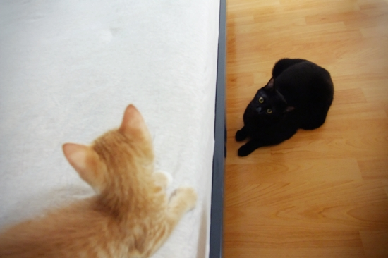
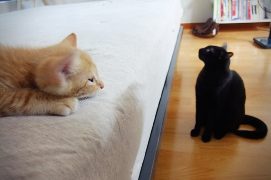
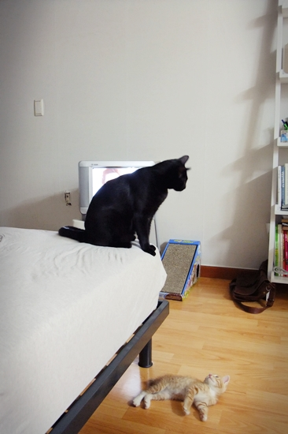
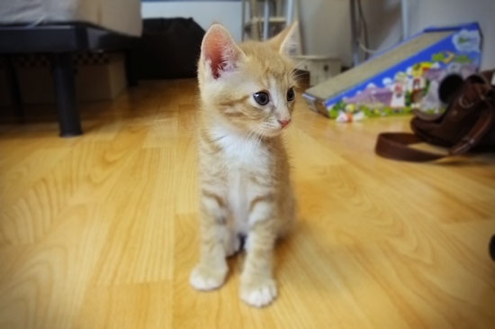

누구냐, 넌.

훗, 형씨가 간장이구만.

지켜보고 있다
지켜보고 있다 2
대치 상태로 잠든 간장과 망고.
간장댁 부천점에 등장한 똘똘 당돌한 아깽이, 망고.
담벼락 사이에 끼어있는 걸 어떤 분이 구조해서 임시보호하고 있었는데
묘연이 닿아 앞으로 함께 살기로 했다.
2개월 조금 더 되었고, 꼬리가 반쯤 잘렸다는 걸 제외하면
두루두루 건강한, 그야말로 똥꼬발랄한 남자 아이다.
간장은 갑작스런 망고의 등장에 놀라 24시간 감시모드에 돌입했다.
처음엔 당황한 나머지 하악질도 잊은 채 졸졸 따라다니며 탐색하기 바빴는데
이젠 망고 등쌀에 이리저리 도망다니며 하악질을 조금씩 한다.
그러거나 말거나 망고는 간장이랑 놀고 싶은지
호기심 많은 아깽이답게 무조건 들이대는데...
짭짤한 간장과 달달한 망고가 언제쯤 친해질지 기대된다. :-)

달달한 미모를 뽐내는 망고.